시작하기먼저 이 칸부터
빅데이터플랫폼 중간고사2026년 10월 26일(월) 수업 시간 오전 9시 30분경 · 평소 수업 강의실(글로벌경상관 203호)필기시험 · 클로즈드북(책·AI 없음) · 신분증과 펜 준비. 교수님이 올려 준 2023년 기출(10문제, 빈칸 채우기·부품 고르기·손계산)이 기준범위 — 1주차~7주차 수업자료(PDF) — 컴퓨터 구조 소개, 데이터 표현, 계산기 회로, CPU, 메모리와 계층 구조(가상메모리 포함), 보조기억장치. 범위 세부는 공지 확인
쓰는 법① 카드를 누르면 크게 열려요 ② 밑줄 친 낱말을 누르면 쉬운 뜻 ③ 옆으로 밀면 다음 장 칸 ④ 장 끝에서 "문제 풀기"
★ B+ 최단 코스시험에 나올 것만 순서대로 · 핵심 문제까지
시간 정말 없으면: 최소 코스제일 쉬운 설명으로 핵심만 약 1시간
▶ 첫 카드부터 시작처음이면 여기부터 순서대로
교수님 시험 힌트
- 교수님(6·7주차) — 작년 기출문제를 올려 줄 테니 그걸 보고 공부하세요. 시험 문제는 공유한 기출을 바탕으로 이 부분을 더 낼 거예요(7주차 녹취가 거칠어 정확한 문장은 불확실).
- 교수님(6·7주차) — 시험은 필기, 클로즈드북이에요. 신분증과 펜만 준비해 오세요. (1주차에도 AI 없이 지식을 내재화했는지 본다고 했어요.)
- 교수님(6주차) — CPU 구성 요소와 명령 실행 5단계(인출·해독·실행·데이터·기록)를 잘 복습해 주세요.
- 교수님(6주차) — 레이턴시(응답 시간)와 대역폭(초당 전송량)은 둘 다 속도지만 다른 개념이니 잘 이해해야 해요.
- 교수님(7주차) — 가상주소가 TLB, 페이지 테이블, 스왑, 캐시를 거쳐 데이터가 되는 과정은 빈칸을 만들어 둘 테니 암기해 주세요.
자료 확인 — 바탕화면 파일과 주차
| 파일 | 실제 | 내용 |
|---|---|---|
| 02컴퓨터구조소개.pdf | 2주차 | 컴퓨터란 무엇인가, 폰노이만 구조, 컴퓨터 구성 요소 |
| 02컴퓨터구조소개-실습.pdf | 2주차 | 컴퓨터 본체 조립 사진(CPU·쿨러·RAM·SSD·그래픽카드·파워) |
| 03데이터표현.pdf | 3주차 | 진법 변환, 2진·8진·16진, BCD, ASCII, 패리티, 유니코드 |
| 04계산기회로.pdf | 4주차 | 반도체, 논리 게이트, 반가산기·전가산기, ALU |
| 05중앙처리장치.pdf | 5주차(43~50쪽은 6주차 진도) | CPU 구성, 기계어 명령, 5단계 실행, RISC·파이프라인, 멀티코어 |
| 06메모리와계층구조.pdf | 6주차 | 메모리 계층, RAM·ROM, 운영체제, 프로세스 |
| 07보조기억장치.pdf | 7주차 | 가상메모리·페이지·TLB, 멀티프로세싱, 자기디스크·CD·SSD, 파티션·RAID |
| 빅데이터플01.txt | 1주차(9/7) | 수업 소개, 평가 방식, 시험은 필기 안내 |
| 빅데이터플02.txt | 2주차(9/14) | 컴퓨터 구조 소개 수업 녹취 |
| 빅데이터플03.txt | 3주차(9/21) | 데이터 표현 수업 녹취 |
| 빅데이터플랫폼04.txt | 4주차(9/28) | 계산기 회로 수업 녹취 |
| 빅데이터플렛폼05.txt | 5주차(10/5) | 중앙처리장치 수업 녹취 |
| 빅데이터플06.txt | 6주차(10/12) | CPU 성능, 메모리 계층, 중간고사 날짜 공지 |
| 빅데이터플07.txt | 7주차(10/19) | 운영체제, 가상메모리, 보조기억장치, 기출 공유 안내 |
| 빅데이터플랫폼001_HW2W.docx | 2주차 과제 | 컴퓨터 부품 이름과 sum.py 실행 설명 |
| 빅데이터플랫폼001_HW3W.docx | 3주차 과제 | 진법과 ASCII 변환, ALU 입력값 |
| 빅데이터플랫폼001_HW4W.docx | 4주차 과제 | 논리 게이트 진리표, 가산기 회로 |
| 빅데이터플랫폼001_HW5W.docx | 5주차 과제 | 인출·해독·실행·데이터·기록 단계, 기계어 빈칸 |
| 빅데이터플랫폼001_HW6W.docx | 6주차 과제 | 메모리 계층 구조 순서와 엑셀 상황 문제 |
| 빅데이터플랫폼001_HW7W.docx | 7주차 과제 | TLB·페이지 테이블·스왑 상태 문제, 파티션·RAID |
| 중간고사_빅데이터플랫폼001_정답포함_오류수정.pdf | 2023년 기출 | 2023-04-21 중간고사 10문제와 정답(올해 공유된 기출) |
옆으로 밀면 첫 장 →
왕초보 컴퓨터 기초2·3·4주차 · 02컴퓨터구조소개.pdf · 03데이터표현.pdf · 빅데이터플02·03·플랫폼04카드 7장
컴퓨터는 무슨 일을 하는 기계일까요컴퓨터 = 프로그램을 실행해서 계산하는 기계. 하는 일은 입력, 처리, 저장, 출력이에요.✍ 시험 포인트그림확인 문제 계산기와 컴퓨터는 뭐가 다를까요프로그램(program) = 큰 계산 문제를 풀기 위해 순서대로 나열한 작은 계산 명령들. 강의자료 요약으로는 "컴퓨터가 수행…✍ 시험 포인트그림확인 문제컴퓨터는 왜 0과 1만 쓸까요비트(bit) = 0 또는 1 하나. 영어 binary(2진) + digit(숫자)의 줄임말이에요. 비트 8개를 묶으면 1바이…✍ 시험 포인트그림확인 문제하드웨어와 소프트웨어컴퓨터는 두 덩어리로 이루어져요.✍ 시험 포인트그림확인 문제프로그램이 돌아가는 아주 큰 그림이 사이트 전체가 사실 이 한 그림을 자세히 풀어 쓴 거예요. 먼저 아주 작은 파이썬 프로그램을 볼게요. 1부터 100까지 더…✍ 시험 포인트코드그림확인 문제앞으로 자주 만날 말 미리 보기1장부터 나오는 말을 한 번에 훑어봐요. 지금은 "아, 이런 말이 있구나" 정도만 알면 돼요. 오른쪽 열의 장에서 자세히 배워…✍ 시험 포인트확인 문제이 장 3줄 요약✓ 이 장 문제 풀기읽은 다음 바로 확인
계산기와 컴퓨터는 뭐가 다를까요프로그램(program) = 큰 계산 문제를 풀기 위해 순서대로 나열한 작은 계산 명령들. 강의자료 요약으로는 "컴퓨터가 수행…✍ 시험 포인트그림확인 문제컴퓨터는 왜 0과 1만 쓸까요비트(bit) = 0 또는 1 하나. 영어 binary(2진) + digit(숫자)의 줄임말이에요. 비트 8개를 묶으면 1바이…✍ 시험 포인트그림확인 문제하드웨어와 소프트웨어컴퓨터는 두 덩어리로 이루어져요.✍ 시험 포인트그림확인 문제프로그램이 돌아가는 아주 큰 그림이 사이트 전체가 사실 이 한 그림을 자세히 풀어 쓴 거예요. 먼저 아주 작은 파이썬 프로그램을 볼게요. 1부터 100까지 더…✍ 시험 포인트코드그림확인 문제앞으로 자주 만날 말 미리 보기1장부터 나오는 말을 한 번에 훑어봐요. 지금은 "아, 이런 말이 있구나" 정도만 알면 돼요. 오른쪽 열의 장에서 자세히 배워…✍ 시험 포인트확인 문제이 장 3줄 요약✓ 이 장 문제 풀기읽은 다음 바로 확인컴퓨터 구조 소개2·6·7주차 · 02컴퓨터구조소개.pdf · 02컴퓨터구조소개-실습.pdf · 05중앙처리장치.pdf · 06메모리와계층구조.pdf · 빅데이터플02·06·07카드 12장
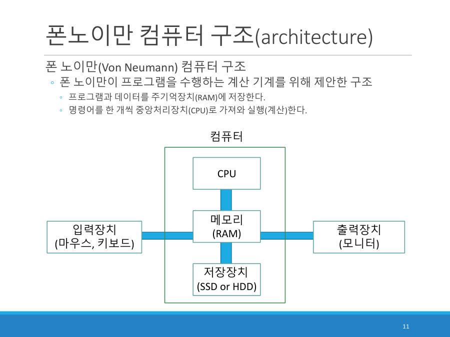
폰노이만 구조 ★★★폰노이만 구조 = 프로그램과 데이터를 주기억장치(RAM)에 저장하고, 명령어를 한 개씩 CPU로 가져와 실행(계산)하는 구조.…✍ 시험 포인트그림확인 문제프로그램이 실행되는 과정 — sum.py 따라가기 ★★★3번 문제는 코드 한 줄이 컴퓨터 안에서 어떻게 움직이는지 묻는 문제예요. 먼저 큰 흐름을 외우고, 그다음 시험에 나온 코드를…✍ 시험 포인트코드확인 문제 컴퓨터의 6대 부품과 역할 ★★★컴퓨터 본체를 열면 부품이 여러 개 보이지만, 시험에 나오는 핵심은 6가지예요. 교수님은 실제 본체를 들고 와서 보여 줬고,…✍ 시험 포인트그림확인 문제조립 순서와 내 컴퓨터 사양 읽기 (실습)교수님은 부품이 어떻게 조립되는지도 사진으로 보여 줬어요. 순서는 아래와 같아요. 교수님 요약은 "선만 잘 연결하고 선 정리만…✍ 시험 포인트확인 문제휘발성과 비휘발성 — RAM과 보조기억장치 ★★휘발성은 전원이 꺼지면 데이터가 사라지는 성질이고, 비휘발성은 전원이 꺼져도 데이터가 남는 성질이에요. 휘발유가 날아가듯 사라…✍ 시험 포인트확인 문제무어의 법칙과 황의 법칙 ★★무어의 법칙 = 반도체(CPU)의 집적도가 약 24개월(2년)마다 2배씩 증가한다는 경험 법칙. 인텔의 공동 창업자 고든 무어…✍ 시험 포인트확인 문제클럭, 온도, 오버클럭 ★★클럭(clock)은 CPU가 계산 신호를 바꾸는 박자예요. 단위는 헤르츠(Hz)이고 G(기가)는 10억을 뜻해요.✍ 시험 포인트그림확인 문제
컴퓨터의 6대 부품과 역할 ★★★컴퓨터 본체를 열면 부품이 여러 개 보이지만, 시험에 나오는 핵심은 6가지예요. 교수님은 실제 본체를 들고 와서 보여 줬고,…✍ 시험 포인트그림확인 문제조립 순서와 내 컴퓨터 사양 읽기 (실습)교수님은 부품이 어떻게 조립되는지도 사진으로 보여 줬어요. 순서는 아래와 같아요. 교수님 요약은 "선만 잘 연결하고 선 정리만…✍ 시험 포인트확인 문제휘발성과 비휘발성 — RAM과 보조기억장치 ★★휘발성은 전원이 꺼지면 데이터가 사라지는 성질이고, 비휘발성은 전원이 꺼져도 데이터가 남는 성질이에요. 휘발유가 날아가듯 사라…✍ 시험 포인트확인 문제무어의 법칙과 황의 법칙 ★★무어의 법칙 = 반도체(CPU)의 집적도가 약 24개월(2년)마다 2배씩 증가한다는 경험 법칙. 인텔의 공동 창업자 고든 무어…✍ 시험 포인트확인 문제클럭, 온도, 오버클럭 ★★클럭(clock)은 CPU가 계산 신호를 바꾸는 박자예요. 단위는 헤르츠(Hz)이고 G(기가)는 10억을 뜻해요.✍ 시험 포인트그림확인 문제 싱글코어, 멀티코어, 하이퍼스레딩 ★★CPU 안에는 실제로 계산을 하는 연산 장치(ALU)가 들어 있어요. 이 연산 장치 하나를 코어(core)라고 불러요. 코어가…✍ 시험 포인트그림확인 문제
싱글코어, 멀티코어, 하이퍼스레딩 ★★CPU 안에는 실제로 계산을 하는 연산 장치(ALU)가 들어 있어요. 이 연산 장치 하나를 코어(core)라고 불러요. 코어가…✍ 시험 포인트그림확인 문제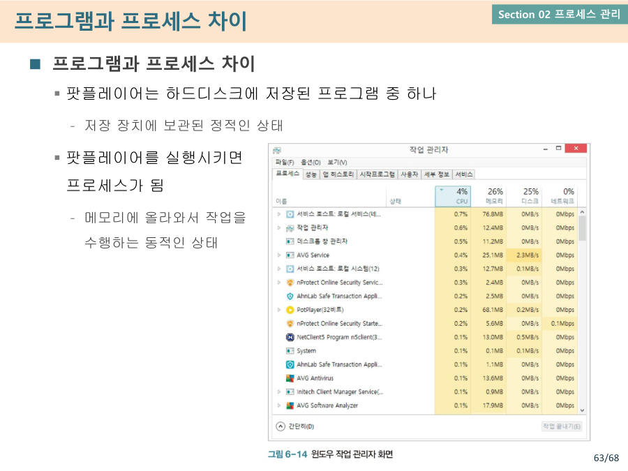
프로그램과 프로세스 ★★★프로그램 = 보조기억장치에 보관된 코드, 프로세스 = 그 코드가 실행되어 메모리에 적재된 것. 운영체제도 실행 중이면 프로세스…✍ 시험 포인트그림확인 문제멀티태스킹, 멀티프로그래밍, 멀티프로세싱, 멀티쓰레딩 ★★★이름이 모두 "멀티"로 시작해서 헷갈려요. 먼저 옛날이야기부터 알아 봐요. 아주 옛날 컴퓨터는 한 번에 프로그램 하나만 실행할…✍ 시험 포인트그림확인 문제운영체제(OS) ★★운영체제 = 컴퓨터 전원이 켜지면 가장 먼저 시작되며, 컴퓨터 자원을 관리하고 여러 응용 프로그램의 실행을 관리하는 프로그램.✍ 시험 포인트확인 문제이 장 3줄 요약✓ 이 장 문제 풀기읽은 다음 바로 확인데이터 표현3주차 · 03데이터표현.pdf · 빅데이터플03카드 11장
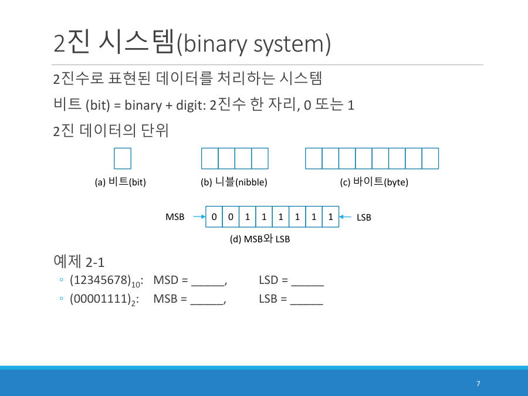
비트, 니블, 바이트 ★★컴퓨터가 쓰는 가장 작은 단위가 비트(bit)예요. binary(2진) + digit(숫자)의 줄임말이고, 0 또는 1 딱 한…✍ 시험 포인트그림확인 문제진법과 10진수 ↔ 2진수 변환 ★★★교수님은 n진법의 규칙은 딱 두 개라고 했어요. 이 두 개만 알면 어떤 진법이든 쓸 수 있어요.✍ 시험 포인트코드확인 문제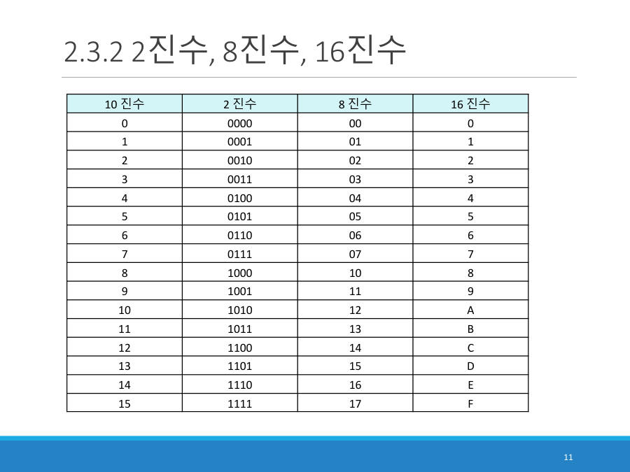
8진수와 16진수 — 묶어서 읽기 ★★★2진수를 오른쪽부터 3자리씩 묶으면 8진수(2³ = 8), 4자리씩 묶으면 16진수(2⁴ = 16).✍ 시험 포인트그림확인 문제2의 거듭제곱과 데이터 크기 (KB, MB, GB, TB) ★★메모리 용량은 항상 2의 거듭제곱으로 계산돼요. 숫자가 커서 겁나지만, 2¹⁰ = 1024 ≈ 1천만 알면 거의 다 풀려요.✍ 시험 포인트확인 문제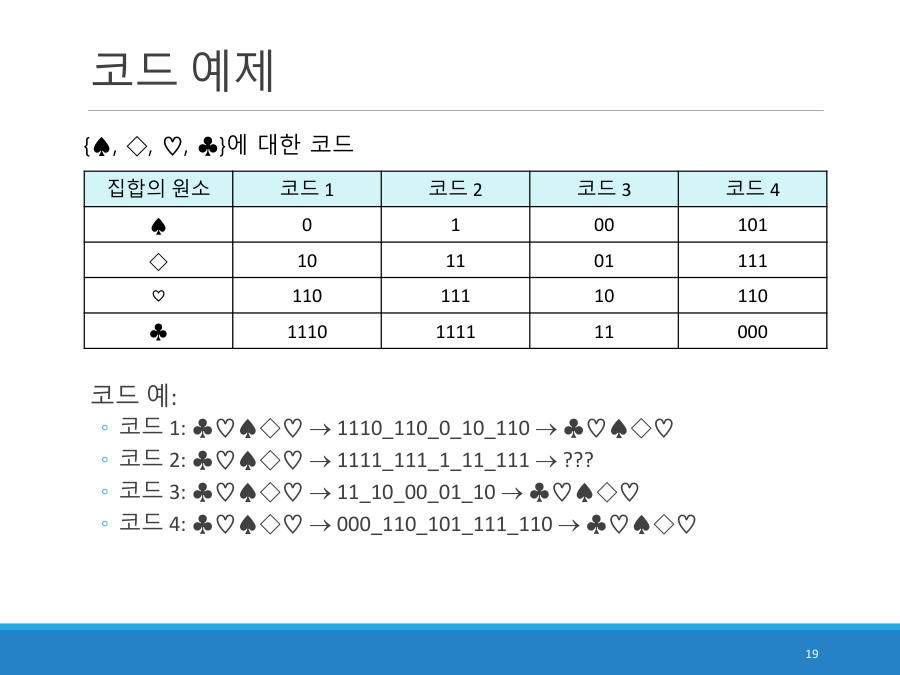
코드, 인코드·디코드, 고정길이 코드코드 = 유한한 개수의 원소(기호)들을 서로 구별할 수 있게, 각 원소에 붙여 주는 숫자. 기호를 코드로 바꾸는 일이 인코드(…✍ 시험 포인트그림확인 문제BCD — 십진수 한 자리씩 이진수로BCD(Binary Coded Decimal, 이진화 십진 코드)는 10진수 한 자리씩 따로 4비트 이진수로 바꾸는 코드예요.…✍ 시험 포인트확인 문제 문자 코드 — ASCII ★★★컴퓨터에는 "글자"라는 것이 없어요. 0과 1뿐이에요. 그래서 "이 글자는 이 숫자"라고 미리 약속한 표가 필요한데, 영어와…✍ 시험 포인트코드그림확인 문제패리티 비트와 유니코드패리티 비트(parity bit)는 데이터가 올바른지 검사하려고 덧붙이는 비트 1개예요.✍ 시험 포인트코드확인 문제기출 4번 — 메모리 칸에 숫자와 글자 쓰기 ★★★2023 기출 4번은 이 장의 내용을 한 번에 묻는 문제예요. 한 칸이 8비트(1바이트)인 메모리에 다섯 개 숫자 137, 7…✍ 시험 포인트확인 문제참고 — 음수와 실수는 어떻게 표현할까요이 소단원은 강의자료와 수업에 나오지 않은 참고 내용이에요. 시험에 나올 가능성은 낮으니, 궁금하거나 시간이 남을 때 읽어 보…✍ 시험 포인트코드확인 문제이 장 3줄 요약✓ 이 장 문제 풀기읽은 다음 바로 확인
문자 코드 — ASCII ★★★컴퓨터에는 "글자"라는 것이 없어요. 0과 1뿐이에요. 그래서 "이 글자는 이 숫자"라고 미리 약속한 표가 필요한데, 영어와…✍ 시험 포인트코드그림확인 문제패리티 비트와 유니코드패리티 비트(parity bit)는 데이터가 올바른지 검사하려고 덧붙이는 비트 1개예요.✍ 시험 포인트코드확인 문제기출 4번 — 메모리 칸에 숫자와 글자 쓰기 ★★★2023 기출 4번은 이 장의 내용을 한 번에 묻는 문제예요. 한 칸이 8비트(1바이트)인 메모리에 다섯 개 숫자 137, 7…✍ 시험 포인트확인 문제참고 — 음수와 실수는 어떻게 표현할까요이 소단원은 강의자료와 수업에 나오지 않은 참고 내용이에요. 시험에 나올 가능성은 낮으니, 궁금하거나 시간이 남을 때 읽어 보…✍ 시험 포인트코드확인 문제이 장 3줄 요약✓ 이 장 문제 풀기읽은 다음 바로 확인계산기 회로4주차 · 04계산기회로.pdf · 빅데이터플랫폼04카드 9장
 계산기는 레고처럼 쌓아서 만든다 ★★CPU 안에서 실제로 계산을 하는 부품이 ALU(산술논리연산장치, 계산기)예요. 그런데 ALU도 처음부터 통으로 만든 게 아니…✍ 시험 포인트그림확인 문제반도체 — 다이오드와 트랜지스터모든 계산기의 맨 아래 블록은 반도체예요. 반도체는 조건에 따라 전기가 통하기도(도체) 하고 안 통하기도(부도체) 하는 물질이…✍ 시험 포인트확인 문제논리 게이트와 진리표 ★★★논리 게이트(logic gate)는 0과 1을 입력받아 정해진 규칙대로 0 또는 1을 내보내는 회로예요. 입력과 출력이 어떤…✍ 시험 포인트코드그림확인 문제불 대수 — 논리를 식으로 쓰기게이트의 규칙을 수학 식으로 쓴 것이 불 대수(부울 대수, Boolean algebra)예요. 값이 0과 1 둘뿐인 대수라서,…✍ 시험 포인트확인 문제
계산기는 레고처럼 쌓아서 만든다 ★★CPU 안에서 실제로 계산을 하는 부품이 ALU(산술논리연산장치, 계산기)예요. 그런데 ALU도 처음부터 통으로 만든 게 아니…✍ 시험 포인트그림확인 문제반도체 — 다이오드와 트랜지스터모든 계산기의 맨 아래 블록은 반도체예요. 반도체는 조건에 따라 전기가 통하기도(도체) 하고 안 통하기도(부도체) 하는 물질이…✍ 시험 포인트확인 문제논리 게이트와 진리표 ★★★논리 게이트(logic gate)는 0과 1을 입력받아 정해진 규칙대로 0 또는 1을 내보내는 회로예요. 입력과 출력이 어떤…✍ 시험 포인트코드그림확인 문제불 대수 — 논리를 식으로 쓰기게이트의 규칙을 수학 식으로 쓴 것이 불 대수(부울 대수, Boolean algebra)예요. 값이 0과 1 둘뿐인 대수라서,…✍ 시험 포인트확인 문제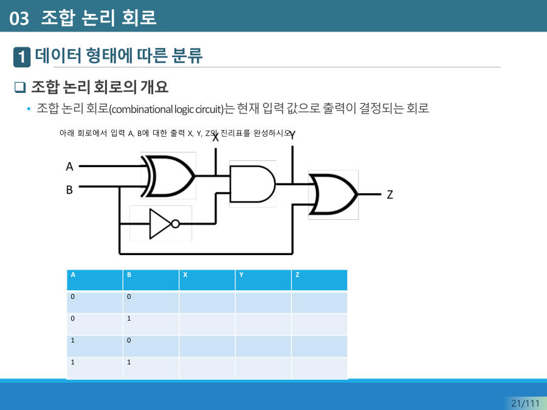
조합 논리 회로와 진리표 완성하기 ★★조합 논리 회로(combinational logic circuit)는 현재 입력값만으로 출력이 결정되는 회로예요. 과거를 기억…✍ 시험 포인트그림확인 문제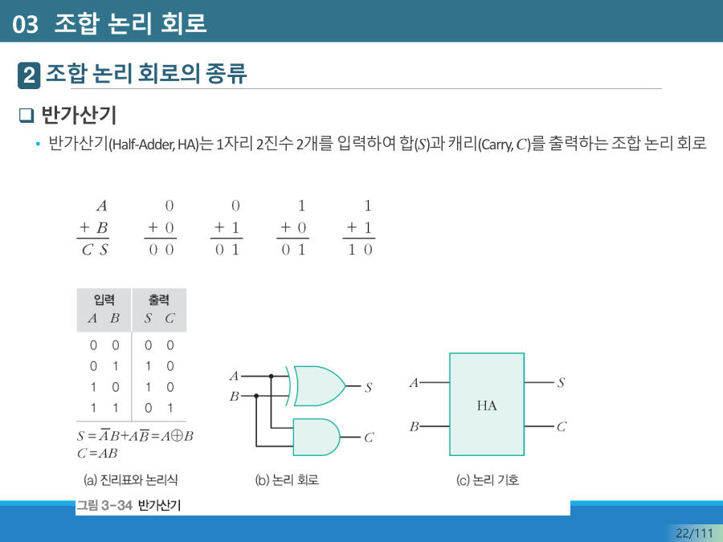
반가산기 (Half Adder) ★★★반가산기(Half Adder, HA) = 1자리 2진수 2개를 입력해 합(S)과 올림(Carry, C 또는 Cout)을 출력하…✍ 시험 포인트그림확인 문제 전가산기 (Full Adder) ★★★전가산기(Full Adder, FA) = 2진수 입력 A, B와 아랫자리에서 올라온 올림 Cin까지 1자리 2진수 3개를 더해…✍ 시험 포인트그림확인 문제8비트 덧셈 계산기 ★★★전가산기 하나는 한 자리만 더해요. 그러면 전가산기 8개를 이어 붙이면 8비트짜리 두 수를 더하는 덧셈 계산기가 돼요. 202…✍ 시험 포인트그림확인 문제이 장 3줄 요약✓ 이 장 문제 풀기읽은 다음 바로 확인
전가산기 (Full Adder) ★★★전가산기(Full Adder, FA) = 2진수 입력 A, B와 아랫자리에서 올라온 올림 Cin까지 1자리 2진수 3개를 더해…✍ 시험 포인트그림확인 문제8비트 덧셈 계산기 ★★★전가산기 하나는 한 자리만 더해요. 그러면 전가산기 8개를 이어 붙이면 8비트짜리 두 수를 더하는 덧셈 계산기가 돼요. 202…✍ 시험 포인트그림확인 문제이 장 3줄 요약✓ 이 장 문제 풀기읽은 다음 바로 확인중앙처리장치(CPU)5~6주차 · 05중앙처리장치.pdf · 빅데이터플렛폼05(5주차), 빅데이터플06(6주차), 빅데이터플07(7주차 일부)카드 9장
폰 노이만 구조 — 프로그램이 실행되는 길 ★★컴퓨터 안에서 프로그램은 세 군데를 차례로 지나가요. 먼저 보조기억장치(SSD나 HDD)에 보관돼 있다가, 실행하면 주기억장치…✍ 시험 포인트코드그림확인 문제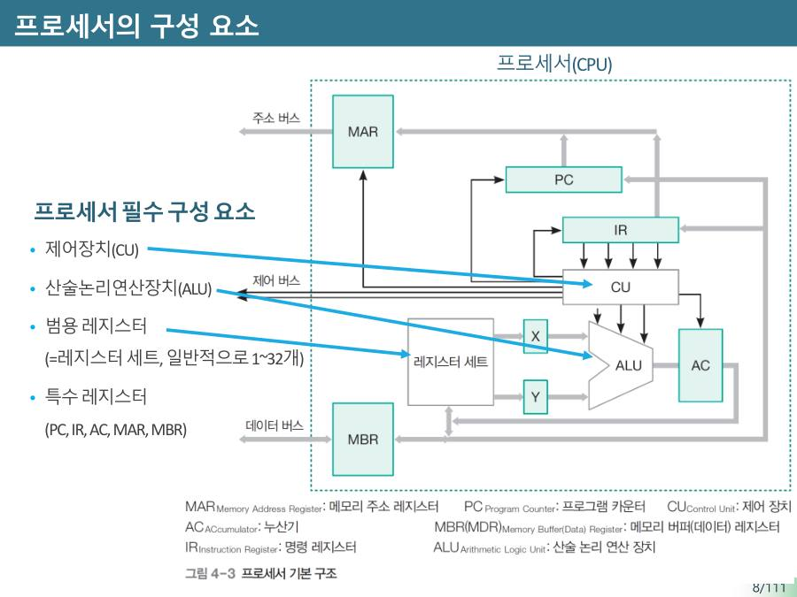
CPU 안에는 무엇이 있을까 — ALU, 제어장치, 레지스터 ★★★CPU는 반드시 있어야 하는 부품 3가지와, 성능을 높이려고 덧붙인 부품 1가지로 이루어져요. 필수 3가지는 산술논리연산장치(…✍ 시험 포인트그림확인 문제부품을 잇는 길, 버스CPU와 메모리 사이에는 신호가 다니는 길이 필요해요. 이 길을 버스(bus)라고 부르고, 하는 일에 따라 세 가지로 나눠요.…✍ 시험 포인트확인 문제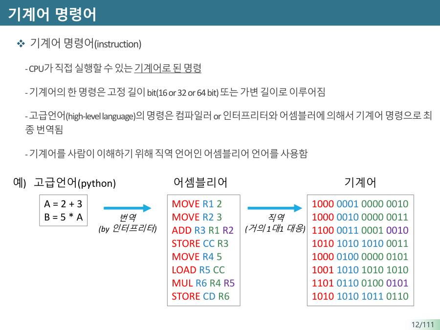
기계어와 명령어 — opcode와 operand ★★CPU가 바로 알아듣는 말은 0과 1로 된 기계어뿐이에요. 사람은 파이썬 같은 고급언어로 코드를 쓰고, 번역기(인터프리터 등)…✍ 시험 포인트그림확인 문제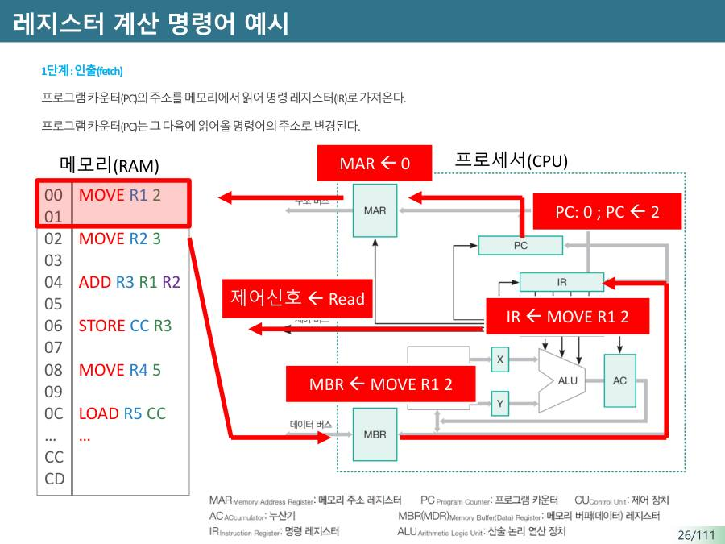
명령 한 줄이 실행되는 5단계 ★★★ 시험 최다 출제CPU는 명령 한 줄을 통째로 처리하지 않고, 더 작은 마이크로 명령 5개로 나눠서 실행해요. 이 5단계를 한 바퀴 도는 것을…✍ 시험 포인트그림확인 문제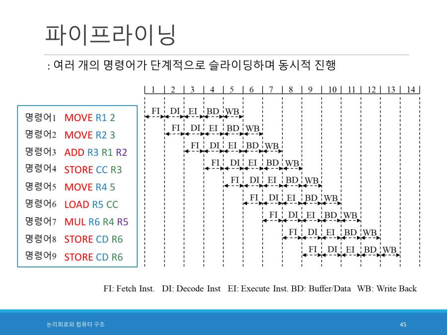
파이프라인과 RISC·CISC ★5단계는 서로 부품이 달라서 겹치지 않아요. 그러면 앞 명령이 해독 중일 때 다음 명령은 벌써 인출을 시작할 수 있겠죠. 이렇…✍ 시험 포인트그림확인 문제CPU 성능 — 집적도, 클럭, 온도, 전력, 멀티코어 ★★CPU의 성능 특성은 네 가지로 말해요. 자료 49쪽에 나오는 그대로예요.✍ 시험 포인트확인 문제CPU를 나눠 쓰는 법 — 멀티태스킹, 멀티프로세싱, 멀티쓰레딩 ★★요즘 컴퓨터는 크롬, 파워포인트, 게임을 한꺼번에 켜 놔요. 이것을 가능하게 하는 용어가 여러 개라 헷갈려요. 7주차에 교수님…✍ 시험 포인트확인 문제이 장 3줄 요약✓ 이 장 문제 풀기읽은 다음 바로 확인메모리와 계층 구조6~7주차 · 06메모리와계층구조.pdf, 07보조기억장치.pdf(앞부분) · 빅데이터플06(6주차), 빅데이터플07(7주차)카드 9장
메모리의 성능을 말하는 다섯 가지 용어메모리를 비교할 때는 아래 다섯 가지 말을 써요. 자료 4쪽에 나오는 그대로예요. 특히 레이턴시와 대역폭은 둘 다 속도인데 서…✍ 시험 포인트확인 문제 메모리 계층 구조 ★★★ 시험 필수컴퓨터의 기억장치는 한 종류가 아니라 레지스터 → 캐시 → 주기억장치(RAM) → 보조기억장치(SSD/HDD) 4층으로 되어…✍ 시험 포인트그림확인 문제캐시와 적중(hit), 실패(miss), 지역성 ★★캐시(cache)는 레지스터와 RAM 사이의 완충 지대예요. 레지스터와 RAM은 속도 차이가 너무 커서, 가운데 한 층을 더…✍ 시험 포인트확인 문제
메모리 계층 구조 ★★★ 시험 필수컴퓨터의 기억장치는 한 종류가 아니라 레지스터 → 캐시 → 주기억장치(RAM) → 보조기억장치(SSD/HDD) 4층으로 되어…✍ 시험 포인트그림확인 문제캐시와 적중(hit), 실패(miss), 지역성 ★★캐시(cache)는 레지스터와 RAM 사이의 완충 지대예요. 레지스터와 RAM은 속도 차이가 너무 커서, 가운데 한 층을 더…✍ 시험 포인트확인 문제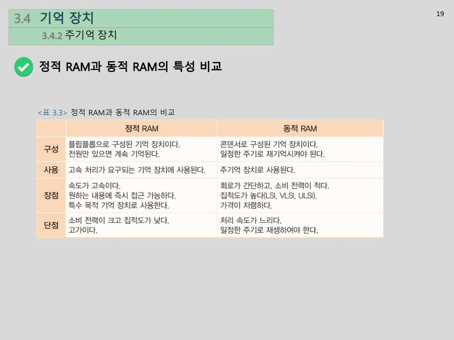
주기억장치(RAM) — ROM, SRAM, DRAM, 주소 ★★주기억장치는 CPU와 직접 데이터를 주고받는 기억장치예요. 프로그램 수행에 필요한 명령과 데이터를 담아요. 요즘은 반도체로 만…✍ 시험 포인트그림확인 문제운영체제와 프로그램, 프로세스 ★★운영체제 = 컴퓨터 전원이 켜지면 가장 먼저 시작되는 프로그램으로, 컴퓨터의 자원(CPU, 메모리, 저장장치 등)을 관리하고…✍ 시험 포인트확인 문제가상메모리와 스왑 영역 ★★★ 올해 새로 추가가상메모리 = 사용자의 실제 메모리 크기와 프로세스가 올라갈 위치를 신경 쓰지 않고 프로그래밍하도록, 프로세스에 (거의) 무한…✍ 시험 포인트코드확인 문제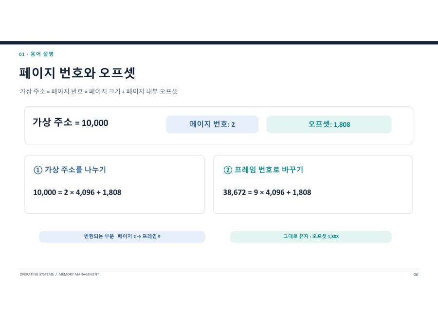
페이지, 프레임, 주소 변환 ★★ 계산 문제 가능가상주소 = 페이지 번호 × 페이지 크기 + 오프셋 (페이지 안의 위치)✍ 시험 포인트그림확인 문제페이지 테이블, TLB, 페이지 폴트 — 주소를 찾는 순서 ★★★ 올해 새로 추가CPU가 데이터 하나를 읽는 일은 사실 두 단계예요. 1단계는 "주소 알아내기"(가상주소 → 물리주소), 2단계는 "데이터 가…✍ 시험 포인트그림확인 문제이 장 3줄 요약✓ 이 장 문제 풀기읽은 다음 바로 확인보조기억장치7주차 · 07보조기억장치.pdf(28쪽~) · 빅데이터플07(7주차)카드 8장
보조기억장치란? — 저장 원리로 나누기 ★★★보조기억장치는 5장 계층 구조의 맨 아래층이에요. 비휘발성(전원이 꺼져도 데이터가 남음)이고 용량이 크지만 접근 속도는 느려요…✍ 시험 포인트확인 문제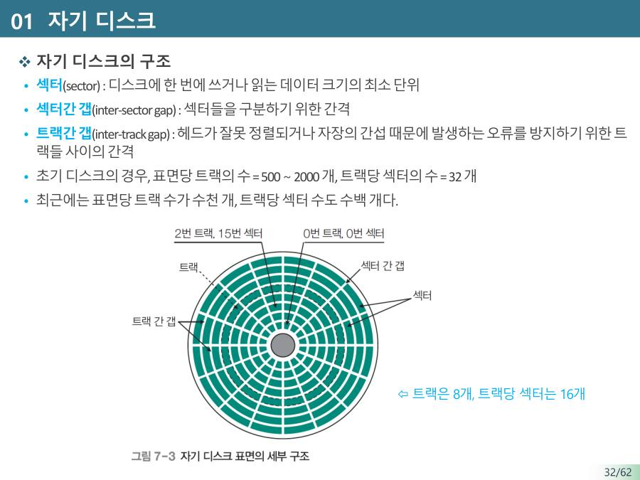
HDD의 구조 — 판, 헤드, 트랙, 섹터 ★★HDD(Hard Disk Drive, 하드디스크)는 플라스틱이나 알루미늄으로 만든 둥근 판에 자석 성질이 강한 물질(강자성체)…✍ 시험 포인트그림확인 문제디스크 접근 시간 — 탐색, 회전, 전송 참고디스크 접근 시간 = 탐색 시간 + 회전 지연 시간 + 데이터 전송 시간 (+ 제어기 오버헤드)✍ 시험 포인트확인 문제 SSD — 움직이는 부품이 없는 저장장치 ★★★SSD(Solid State Drive)는 기계 부품이 있는 HDD를 대신하려고 만든 대용량 비휘발성 반도체 저장장치예요. 안…✍ 시험 포인트그림확인 문제광학 저장장치 — CD-ROM, DVD, 블루레이 참고레이저로 읽는 디스크예요. 요즘은 잘 안 쓰지만 기출에 "광학적 성질을 이용하는 것은 CD-ROM"으로 나왔어요. 원리는 이래…✍ 시험 포인트확인 문제파티션과 포맷 ★★파티션(partition)은 저장장치 하나를 여러 공간으로 나눠서 마치 따로따로인 것처럼 쓰는 거예요. 예를 들어 4TB SS…✍ 시험 포인트확인 문제
SSD — 움직이는 부품이 없는 저장장치 ★★★SSD(Solid State Drive)는 기계 부품이 있는 HDD를 대신하려고 만든 대용량 비휘발성 반도체 저장장치예요. 안…✍ 시험 포인트그림확인 문제광학 저장장치 — CD-ROM, DVD, 블루레이 참고레이저로 읽는 디스크예요. 요즘은 잘 안 쓰지만 기출에 "광학적 성질을 이용하는 것은 CD-ROM"으로 나왔어요. 원리는 이래…✍ 시험 포인트확인 문제파티션과 포맷 ★★파티션(partition)은 저장장치 하나를 여러 공간으로 나눠서 마치 따로따로인 것처럼 쓰는 거예요. 예를 들어 4TB SS…✍ 시험 포인트확인 문제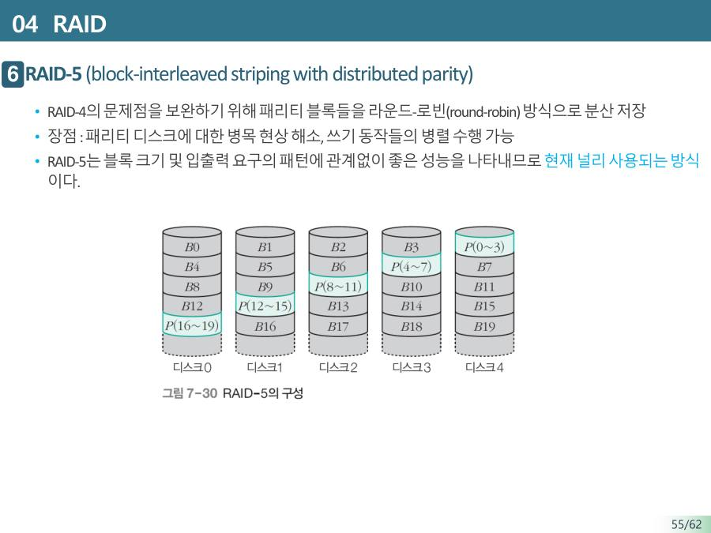
RAID — 여러 디스크를 묶어 하나처럼 ★★★디스크 하나의 용량에는 한계가 있고, 서버나 데이터센터는 수백 TB가 필요해요. 20TB 디스크 25개를 묶으면 500TB짜리…✍ 시험 포인트그림확인 문제이 장 3줄 요약✓ 이 장 문제 풀기읽은 다음 바로 확인과제로 복습2~7주차 · HW2W~HW7W.docx · 5·6·7주차 녹취카드 7장
HW2W 컴퓨터 구조 — 부품 6개와 sum.pyQ1 요지 : 컴퓨터 내부 사진의 부품 ①~⑥의 이름과 기능을 설명하라.✍ 시험 포인트코드확인 문제HW3W 데이터 표현 — 진법, ASCII, ALU 입력값Q1 요지 : 正(5개를 뜻하는 표시) 7개로 적은 수량을 사람이 원고지에, 컴퓨터가 메모리에 어떻게 적는지 나타내고, 5진수…✍ 시험 포인트확인 문제HW4W 계산기 회로 — 논리 게이트와 가산기Q1~Q3 요지 : AND, OR, NOT의 진리표를 완성하라. 먼저 기본 규칙을 외워 두면 표는 금방 채워져요.✍ 시험 포인트확인 문제HW5W 중앙처리장치 — 인출부터 기록까지 ★★★Q1~Q5 요지 : 메모리 0번 주소부터 프로그램이 시작되고 현재 PC가 4이다. 인출, 해독, 실행, 데이터, 기록 각 단계…✍ 시험 포인트확인 문제HW6W 메모리 계층 구조 ★★보기는 1 레지스터, 2 캐시, 3 주기억장치(RAM), 4 보조기억장치(SSD/HDD)예요. (기출은 번호가 달랐으니 이름으…✍ 시험 포인트확인 문제HW7W 가상메모리와 보조기억장치 ★★★ 올해 새 유형이 과제는 "현재 상태"가 주어지는 문제예요. 상태를 먼저 표로 옮겨 놓고 풀어야 헷갈리지 않아요. 아래가 문제의 현재 상태예…✍ 시험 포인트확인 문제이 장 3줄 요약✓ 이 장 문제 풀기읽은 다음 바로 확인기출 풀이 (2023)중간고사_빅데이터플랫폼001_정답포함_오류수정.pdf카드 11장
Q1. 용어 빈칸 채우기 (10점)보기 16개 중에서 골라 빈칸 10개를 채워요. 한 칸에 1점이에요. 보기에는 정답이 아닌 말 6개(멀티 태스킹, 멀티 프로그…✍ 시험 포인트확인 문제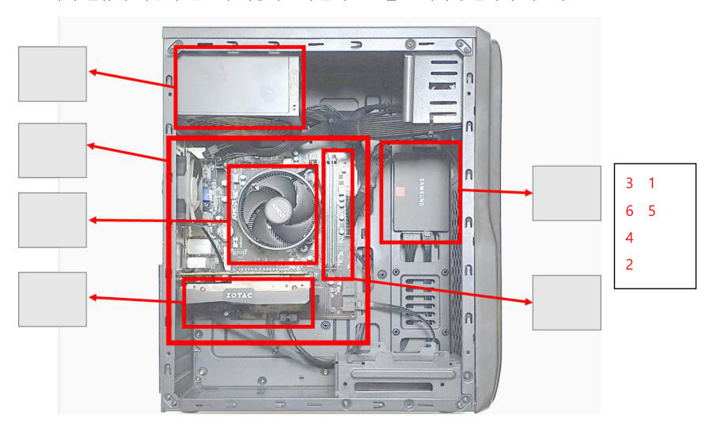
Q2. 컴퓨터 부품 6개 알아보기 (12점)보기의 부품 6개는 보조기억장치(1), 그래픽카드(2), 전원공급장치(3), CPU(4), RAM(5), 메인보드(6)예요.…✍ 시험 포인트그림확인 문제Q3. sum.py가 실행되는 과정 (10점)다음 파이썬 코드가 어디에 저장되고, 어디에 올라가고, 누가 계산하는지를 빈칸 10개(A~E, v~z)로 물어요. 한 칸에 1…✍ 시험 포인트코드확인 문제Q4. 십진수와 문자를 1바이트 이진수로 (10점)8비트(=1바이트)가 1워드인 메모리가 있어요. 십진수 137, 7, 38, 77, 11과 문자 Robot의 다섯 글자를 1바…✍ 시험 포인트확인 문제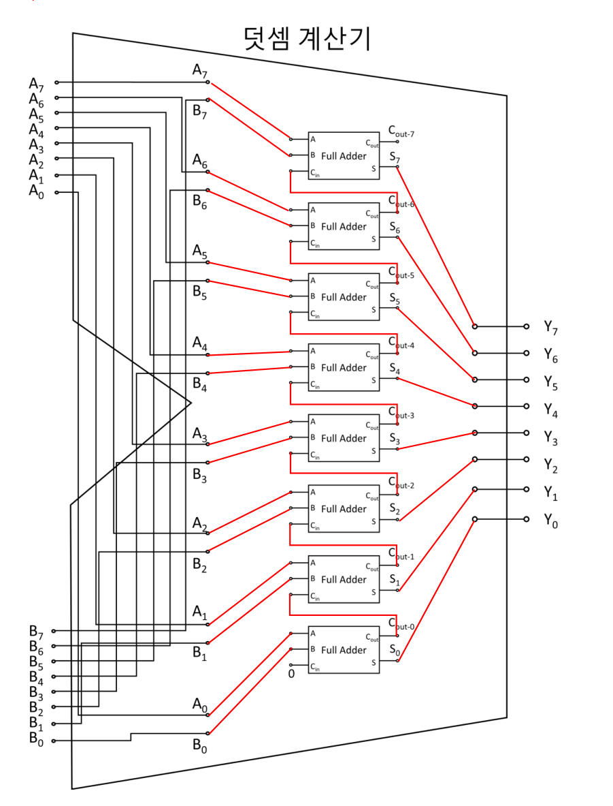
Q5. 논리 게이트와 가산기 (10점)AND, OR, NOT, XOR 진리표(각 1점), 반가산기와 전가산기 진리표(각 1점), 8비트 덧셈 계산기 회로 연결(4점…✍ 시험 포인트그림확인 문제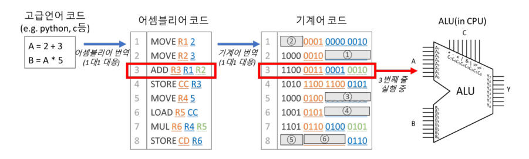
Q6. 기계어와 ALU (10점)고급언어 코드가 어셈블리어를 거쳐 기계어로 번역되고, 3번째 줄이 ALU에서 실행되는 그림이에요. 기계어 빈칸 ①~⑥(각 1점…✍ 시험 포인트그림확인 문제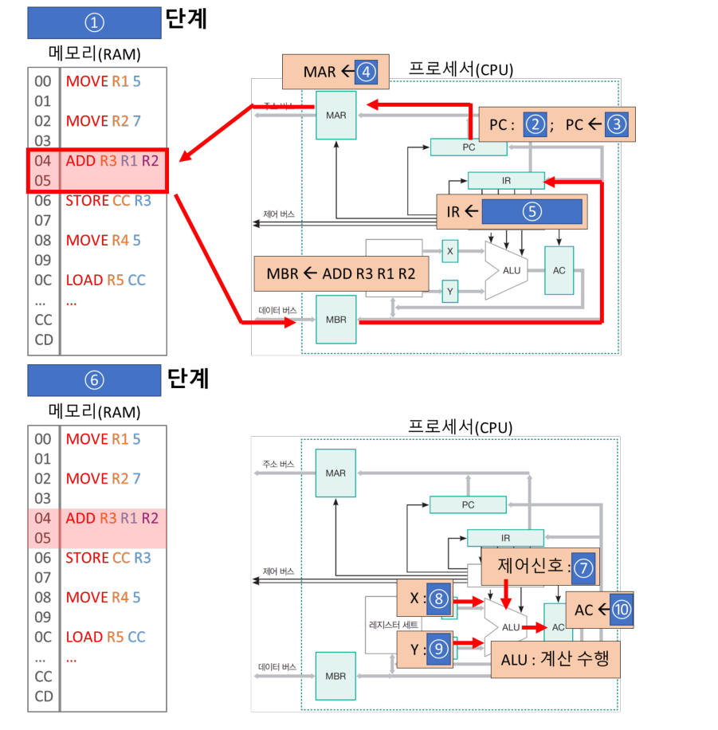
Q7. 명령 실행의 마이크로 단계 (10점)CPU는 메모리 00번지부터 시작해 지금 04번지의 ADD R3 R1 R2를 실행 중이에요. 이때 서로 다른 두 단계의 그림에…✍ 시험 포인트그림확인 문제Q8. 메모리 계층 구조 (11점)메모리 4종류는 주기억장치(RAM, 1), 보조기억장치(SSD/HDD, 2), 레지스터(3), 캐쉬(4)예요. 8.1~8.3은…✍ 시험 포인트확인 문제Q9. 40GB 파일을 읽었더니 컴퓨터가 멈췄어요 (8점)열이 1000개, 줄이 400만 개인 40GB짜리 bigdata.csv를 HDD에 저장했어요. 컴퓨터 사양은 8코어 CPU,…✍ 시험 포인트코드확인 문제Q10. 보조기억장치 (9점)보기는 SSD, HDD, CD-ROM, RAID, 파티션, 섹터, 트랙, 실린더, RAM, 레지스터, 포맷이에요. 빈칸 9개를…✍ 시험 포인트확인 문제이 장 3줄 요약✓ 이 장 문제 풀기읽은 다음 바로 확인연습하기읽고 나서 여기서 확인
B+ 핵심 문제꼭 나올 문제만 30개
퀴즈 109장별로 풀기 · 틀린 것만 다시
서술형 · 설명 12쉬운 풀이 + 시험지에 쓸 답
암기카드용어 38 · 공식·숫자 15
낱말사전 139모르는 말 찾기
시험 전 1장시험 정보 · 공식 · 용어 한 장에